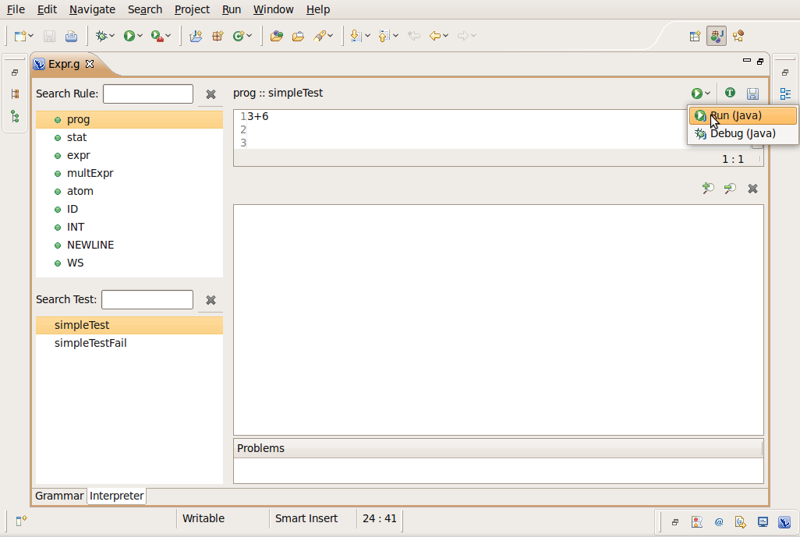
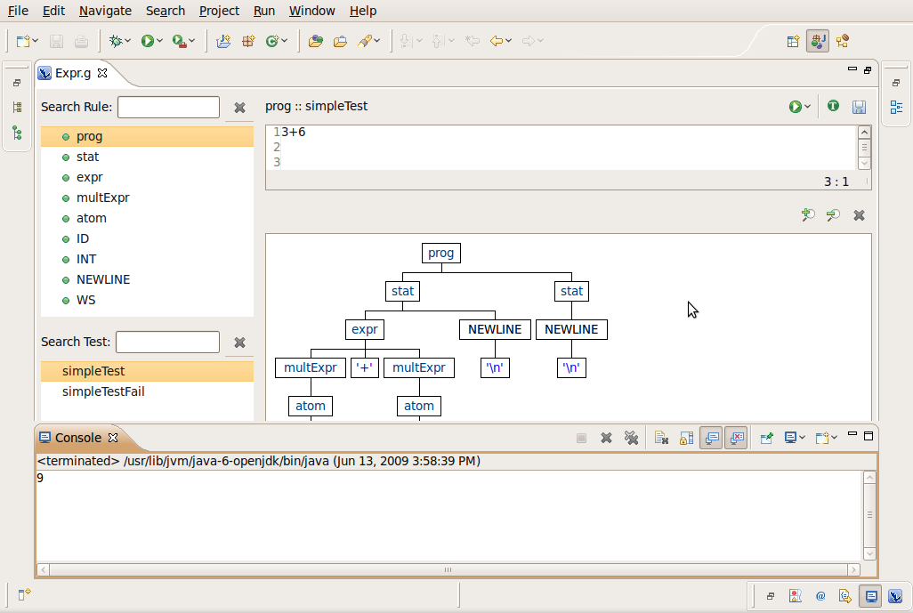

Running your grammars
In this section, you will learn more about running ANTLR grammars
in the workbench.
System Requirements and limitations
- Double click in Expr.g file to open it with the ANTLR editor.
- Select Interpreter page
- Select the "prog" rule in the Rule Panel
- Select the "simpleTest" test case in the Test
Panel
- Select the "Run (Java)" button

The "Run (Java)"/"Debug (Java)" button are available for saved
test case
You can only run/debug combined/parser grammars
